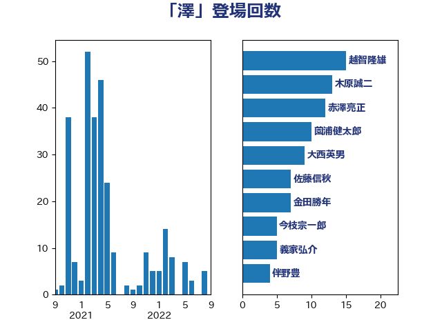

単語「澤」

| 越智隆雄 | 自由民主党 | 15 回 |
| 木原誠二 | 自由民主党 | 13 回 |
| 赤澤亮正 | 自由民主党 | 12 回 |
| 薗浦健太郎 | 自由民主党 | 10 回 |
| 大西英男 | 自由民主党 | 9 回 |
| 佐藤信秋 | 自由民主党 | 7 回 |
| 金田勝年 | 自由民主党 | 7 回 |
| 今枝宗一郎 | 自由民主党 | 5 回 |
| 義家弘介 | 自由民主党 | 5 回 |
| 伴野豊 | 立憲民主党 | 4 回 |
| 和田義明 | 自由民主党 | 4 回 |
| 山田太郎 | 自由民主党 | 4 回 |
| 森屋宏 | 自由民主党 | 4 回 |
| 細田博之 | 自由民主党 | 4 回 |
| 豊田俊郎 | 自由民主党 | 4 回 |
| 新妻秀規 | 公明党 | 3 回 |
| 末松義規 | 立憲民主党 | 3 回 |
| 菅直人 | 立憲民主党 | 3 回 |
| 金子恭之 | 自由民主党 | 3 回 |
| 高橋千鶴子 | 日本共産党 | 3 回 |
| 麻生太郎 | 自由民主党 | 3 回 |
| 宮崎政久 | 自由民主党 | 2 回 |
| 杉本和巳 | 日本維新の会 | 2 回 |
| 根本匠 | 自由民主党 | 2 回 |
| 田村智子 | 日本共産党 | 2 回 |
| 石橋通宏 | 立憲民主党 | 2 回 |
| 神田潤一 | 自由民主党 | 2 回 |
| 落合貴之 | 立憲民主党 | 2 回 |
| 藤丸敏 | 自由民主党 | 2 回 |
| 西村康稔 | 自由民主党 | 2 回 |
| 道下大樹 | 立憲民主党 | 2 回 |
| 鈴木俊一 | 自由民主党 | 2 回 |
| 高木啓 | 自由民主党 | 2 回 |
| あべ俊子 | 自由民主党 | 1 回 |
| 上川陽子 | 自由民主党 | 1 回 |
| 上野賢一郎 | 自由民主党 | 1 回 |
| 中谷一馬 | 立憲民主党 | 1 回 |
| 井上英孝 | 日本維新の会 | 1 回 |
| 伊藤岳 | 日本共産党 | 1 回 |
| 前原誠司 | 国民民主党 | 1 回 |
| 古屋範子 | 公明党 | 1 回 |
| 寺田学 | 立憲民主党 | 1 回 |
| 小倉將信 | 自由民主党 | 1 回 |
| 小沢雅仁 | 立憲民主党 | 1 回 |
| 山下貴司 | 自由民主党 | 1 回 |
| 山本順三 | 自由民主党 | 1 回 |
| 山谷えり子 | 自由民主党 | 1 回 |
| 岡本三成 | 公明党 | 1 回 |
| 森まさこ | 自由民主党 | 1 回 |
| 森本真治 | 立憲民主党 | 1 回 |
| 武村展英 | 自由民主党 | 1 回 |
| 河西宏一 | 公明党 | 1 回 |
| 海江田万里 | 立憲民主党 | 1 回 |
| 熊谷裕人 | 立憲民主党 | 1 回 |
| 田嶋要 | 立憲民主党 | 1 回 |
| 石井浩郎 | 自由民主党 | 1 回 |
| 秋野公造 | 公明党 | 1 回 |
| 若宮健嗣 | 自由民主党 | 1 回 |
| 葉梨康弘 | 自由民主党 | 1 回 |
| 足立康史 | 日本維新の会 | 1 回 |
| 鈴木憲和 | 自由民主党 | 1 回 |
| 長峯誠 | 自由民主党 | 1 回 |
| 長浜博行 | 無所属 | 1 回 |
| 阿部知子 | 立憲民主党 | 1 回 |
| 階猛 | 立憲民主党 | 1 回 |
| 馬淵澄夫 | 立憲民主党 | 1 回 |
| 高木毅 | 自由民主党 | 1 回 |
| 高鳥修一 | 自由民主党 | 1 回 |